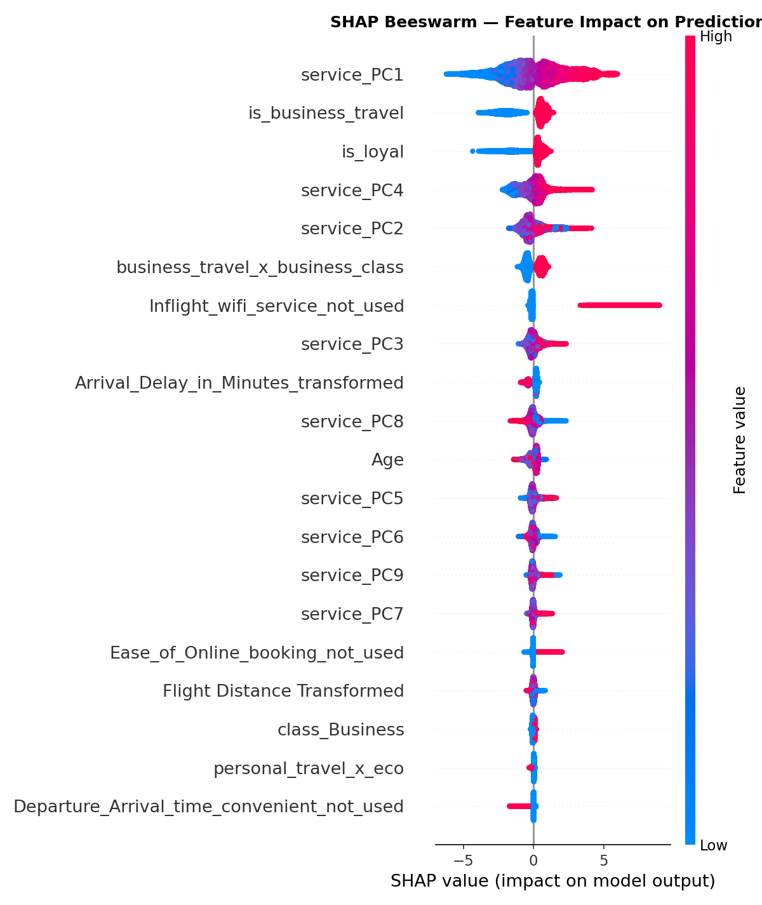
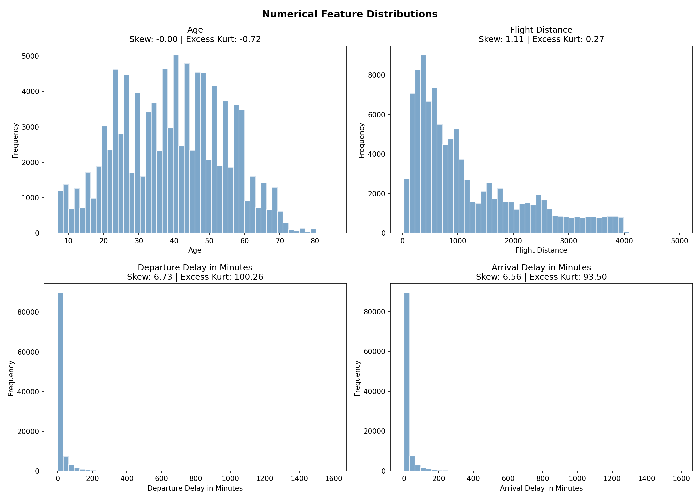
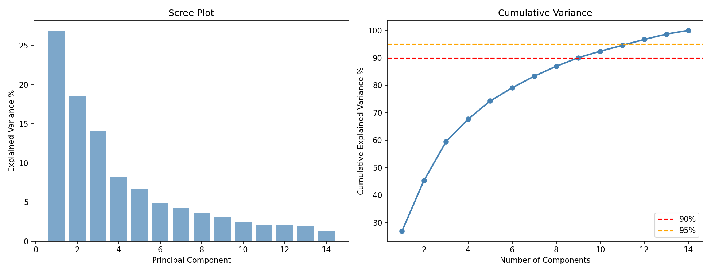

Analysis
Airline Satisfaction
A passenger is a mix of cabin, purpose, and the online steps before the flight. Cleaning that mix mattered more than picking a bigger model.
- 01 · LookSurvey of 103,904 flights. Delays are missing, ratings pile up at zero, and 18 features share the same information.
- 02 · RepairArrival delay is filled from departure delay. The survey block is folded into a few comfort scores so the columns stop repeating each other.
- 03 · FitThe same 23 features go to logistic regression, a random forest, and XGBoost.
- 04 · ExplainSHAP on the winner, so the score has a reason a person can read.
Question
- Which parts of the trip actually move someone from neutral to satisfied?
- Class looks ordered, but Eco Plus does not sit neatly between Eco and Business, so it stays a category.
Why this path
- Mean-filling the delay would invent a typical flight. Predicting arrival from departure keeps the delay that really happened (R² 0.93).
- Once the repeated survey items are combined, a simple model and a boosted one can be compared fairly.
What held
0.987ROC-AUC, XGBoost on the held-out flights
0.935F1 on that same test split
72% vs 12%satisfied in business class, business trip vs personal trip
Reading the result
- Business class is satisfied 69% of the time, Eco 19%, Eco Plus 25%. The cabin matters, and the reason for flying matters more: the same seat on a personal trip collapses.
- Almost all disloyal customers are business travelers, so retention here is a corporate-account question.
- Online boarding and type of travel lead the explanation. The high score fits this survey, where the answers already sit close to the label.
A real output
Business + business travel 72% satisfied
Business + personal trip 12% satisfied
Eco 19% satisfied
XGBoost test F1 0.935
Plots below are the ones saved from the notebook.
How the models compared
- Three models, one feature set. XGBoost is the one reported. The others were close enough that the feature work is the real gain.
- Eighteen features started above VIF 5. After the survey block went through PCA, none did.



Scope. One airline’s form, not a forecast of next quarter, and not a claim that changing boarding would lift satisfaction by the SHAP amount.